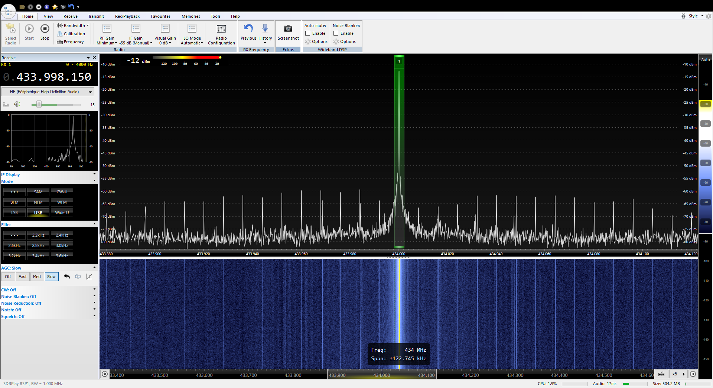
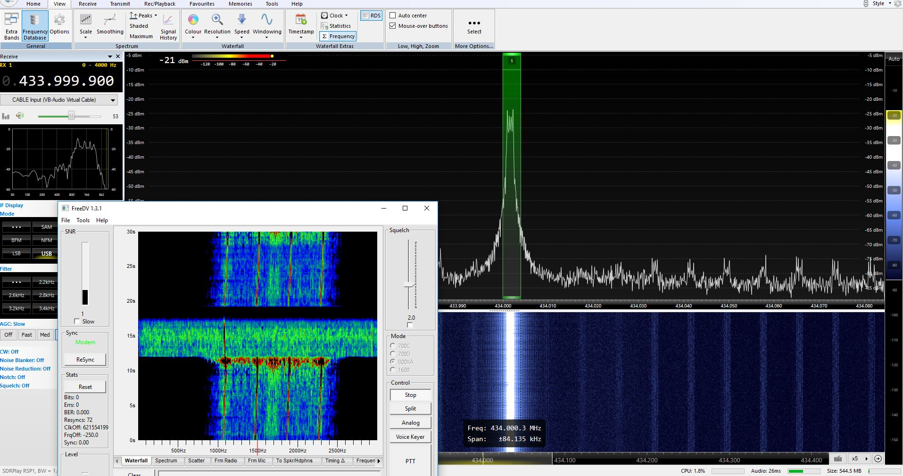

火腿手中的树莓派
BG1REN
简单说说树莓派……
A small and affordable computer that you can use to learn programming
树莓派 Raspberry Pi

-
小身材
名片大小，轻松进口袋
85.60mm x 53.98mm x 17mm -
价格便宜
某宝价裸板200冒头
加外壳、存储卡也不到300元 -
量又足
功能强大接口全
64位4核1.4G CPU、1G RAM、LAN、WiFi、蓝牙、USB、HDMI、GPIO……

Raspberry Pi 3 Model B+
Raspberry Pi 3的最新型号
- 处理器： ARMv8 4核 1.4GHz
- 内存： 1GB LPDDR2 SDRAM
- 无线： 2.4GHz/5GHz Wireless LAN，蓝牙4.2/BLE
40脚GPIO、千兆网、HDMI、4个USB 2.0、CSI摄像头接口、DSI触屏接口、4线立体声和和视频口、MicroSD插座、5V/2.5A直流输入。通过PoE Hat可支持PoE。

Raspberry Pi 3 Model A+
B+的缩小版本
- 处理器： ARMv8 4核 1.4GHz
- 内存： 512MB LPDDR2 SDRAM
- 无线： 2.4GHz/5GHz Wireless LAN，蓝牙4.2/BLE
40脚GPIO、HDMI、1个USB 2.0、CSI摄像头接口、DSI触屏接口、4线立体声和和视频口、MicroSD插座、5V/2.5A直流输入。
Raspberry Pi Zero
最小的树莓派，像个大U盘。
- 处理器： 单核 1GHz
- 内存： 512MB RAM
Mini HDMI口、MicroUSB OTG口、MicroUSB供电、40脚GPIO、视频口、CSI摄像头接口。

Raspberry Pi Zero W
Raspberry Pi Zero的增强型。
- 无线网： 802.11 b/g/n wireless LAN
- 蓝牙： 蓝牙4.1、BLE
其他和Raspberry Pi Zero一样。
Linux with GUI
大多数情况下，树莓派运行Linux操作系统。
Raspbian是官方支持的Linux发行版，兼容性最好。可以用NOOBS安装。
常用软件都可从软件仓库中直接下载安装。
此外，还有大量的第三方发行版，例如Ubuntu Mate、Snappy Ubuntu Core、ArchLinux等。甚至还能运行Windows 10 IoT Core。
当常规电脑用
插入存有操作系统的MicroSD卡
连接HDMI显示器
接入USB键盘和鼠标
通过MicroUSB供电

火腿的第一个树莓派实验
FM发射机

现在就试试！
请将手台调整到 438.700 MHz
准备收听……

“Houston, we have a problem.”
APOLLO 13
RPiTx项目
RPiTx将树莓派变成一个通用的射频发射器。
开源，目前是第2版，Star数1121，项目处于活跃状态。
主要用于射频系统的教学。
https://github.com/F5OEO/rpitx
RPiTx项目（续）
使用树莓派内置的PLL（锁相环）模块。
在GPIO-04生成射频信号。
支持的频率范围：5KHz至1500MHz。
为了避免造成干扰，需加滤波器。此外无需其他硬件。
https://github.com/F5OEO/rpitx
RPiTx - Tune
RPiTx - Chirp

RPiTx - Spectrum

RPiTx - FM with RDS
RPiTx - SSB

RPiTx - SSTV
RPiTx - POCSAG (pager mode)
RPiTx - Freedv (digital voice)
RPiTx - Opera (Beacon)